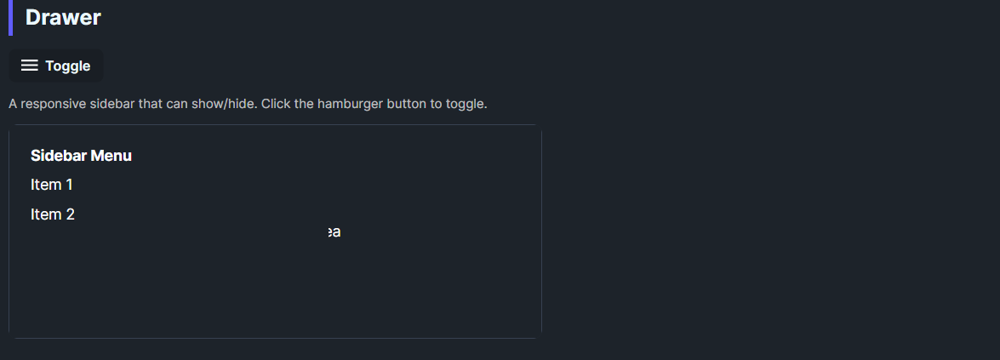

DaisyDrawer wraps WinUI's SplitView to create a sidebar drawer. Defaults to an inline drawer on the left with a 300px open width and no compact pane. The template includes a slide-in animation and optional overlay support for overlay mode. Use it to host navigation or settings panels that toggle in/out of view.
| Property | Description |
|---|---|
IsPaneOpen |
Shows/hides the pane. Toggle this to open/close the drawer. |
Pane / PaneTemplate |
Content for the sidebar. |
Content / ContentTemplate |
Main area content. |
OpenPaneLength (default 300) |
Drawer width when open. |
PanePlacement (default Left) |
Side where the drawer appears. |
DisplayMode (default Inline) |
Set to Overlay for overlay behavior with scrim support in the template. |
<!-- Basic inline drawer -->
<controls:DaisyDrawer IsPaneOpen="True" OpenPaneLength="280">
<controls:DaisyDrawer.Pane>
<StackPanel Margin="16" Spacing="8">
<TextBlock Text="Menu" FontWeight="SemiBold" />
<Button Content="Item 1" />
<Button Content="Item 2" />
</StackPanel>
</controls:DaisyDrawer.Pane>
<Grid Background="{ThemeResource DaisyBase100Brush}">
<TextBlock Text="Main content" HorizontalAlignment="Center" VerticalAlignment="Center" />
</Grid>
</controls:DaisyDrawer>
<!-- Toggling from a button -->
<controls:DaisyButton Content="Toggle" Click="OnToggleDrawer" />
<controls:DaisyDrawer x:Name="Drawer" DisplayMode="Overlay" PanePlacement="Left">
<!-- Pane/Content here -->
</controls:DaisyDrawer>DisplayMode="Overlay" and toggle IsPaneOpen; the template includes a slide-in transform and overlay placeholder.OpenPaneLength between 240–320px for comfortable navigation panels.ScrollViewer if the menu can exceed the viewport height.DaisyDock or DaisyMenu styles for consistent navigation visuals.